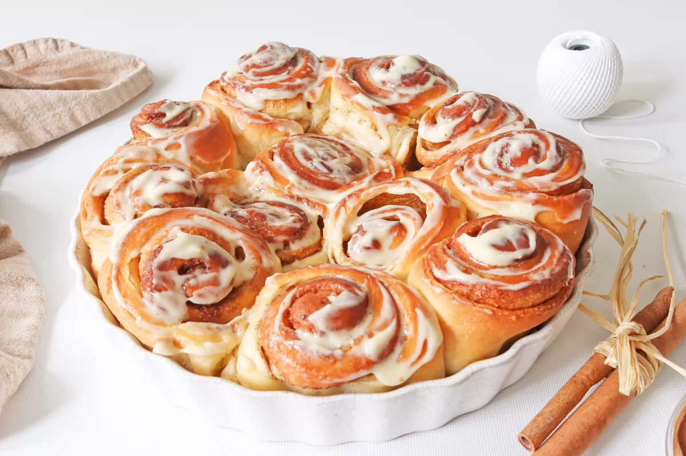

Cinnamon Roll

Descripción
Los cinnamon rolls son unos bollos con una textura tierna y esponjosa,
rellenos de mantequilla y canela, y acabados con una sedosa cobertura de crema de queso.
Aunque parezca una receta clásica estadounidense, lo cierto es que los cinnamon rolls
aparecieron por primera vez en el año 1920 en Suecia, donde hoy tienen su propio día de
celebración, el 4 de octubre.
A lo largo del siglo XX, durante el periodo de guerras, fueron muchos los suecos que
emigraron a Estados Unidos llevando la preciada receta de los bollitos consigo.
Los americanos adaptaron la receta cambiando el cardamomo por la canela, aumentado el
tamaño de los bollos y añadiendo un extra de frosting hasta conseguir los rollos de
canela que hoy conocemos.
Ingredientes
Para la masa:
- 300g de harina de trigo
- 40g de azúcar
- 7g de levadura seca de panadería
- 150ml de leche
- 1 huevo
- 40g de mantequilla a temperatura ambiente
Para el relleno:
- 60g de mantequilla a temperatura ambiente
- 50g de azúcar moreno
- 1 cucharada de canela en polvo
Para el frosting de crema de queso:
- 150g de queso crema
- 30g de azúcar glas
- 1 cucharadita de vainilla en pasta
Preparación
- Mezclamos la harina y el azúcar para la masa
- Añadimos la levadura
- Vertemos la leche
- Añadimos el huevo
- Añadimos la mantequilla y amasamos 10 minutos
- Dejamos reposar la masa 2 horas
- Preparamos el relleno de los bollos mezclando los ingredientes de este
- Desgasificamos la masa ya fermentada, la estiramos y la untamos con el relleno
- Enrollamos la masa y formamos las porciones con forma de rollo
- Dejamos que fermenten los rollos
- Los horneamos 30 minutos a 200 ºC
- Los dejamos enfriar y los cubrimos con el frosting
- Servimos los cinnamon rolls recién hechos o recalentados en el microondas